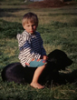

About me
Hallo, ich bin Viktor und hab mich im Vergleich zu dem Bild kaum merklich verändert.
Mein Abitur habe ich leider bereits lange vor Corona abgeschlossen, und kam daher nicht in den Genuss von vereinfachten Prüfungen, verlängerter Vorbereitungszeit und keinem künstlich aufgeblähten Abiball.
Tja, das war tatsächlich so lange vor Corona, dass ich vor dem Studium noch Zeit hatte, diverse Praktika, sowie eine Ausbildung als Mediengestalter zu absolvieren.
Über mein Studium
Zurzeit studiere ich Medieninformatik im 2. Semester ...und das alles online 😎